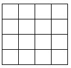

习题十五
1.如图，把边长为4的正方形分为16个边长为1的小正方形，则图中共有多少个长方形（包括正方形）？这些长方形面积之和为多少？

2.一个数列，它的前两个数是2，7.以后各项构造规律是：自左至右，依次取相邻两项之积，如果积是一位数，就取它为下一项；如果积是两位数，就顺次用积的十位数字、个位数字作为后两项.把它的前几项写出来如下：
2，7，1，4，7，4，2，8，2，8，…
（由2、7产生第3、4项1、4，由7、1产生第5项7，由1、4产生第6项4，由4、7产生第7、8项2、8，由7、4产生第9、10项2、8、…）。
这个无穷数列中，数字6是否出现？如果出现，出现多少次？